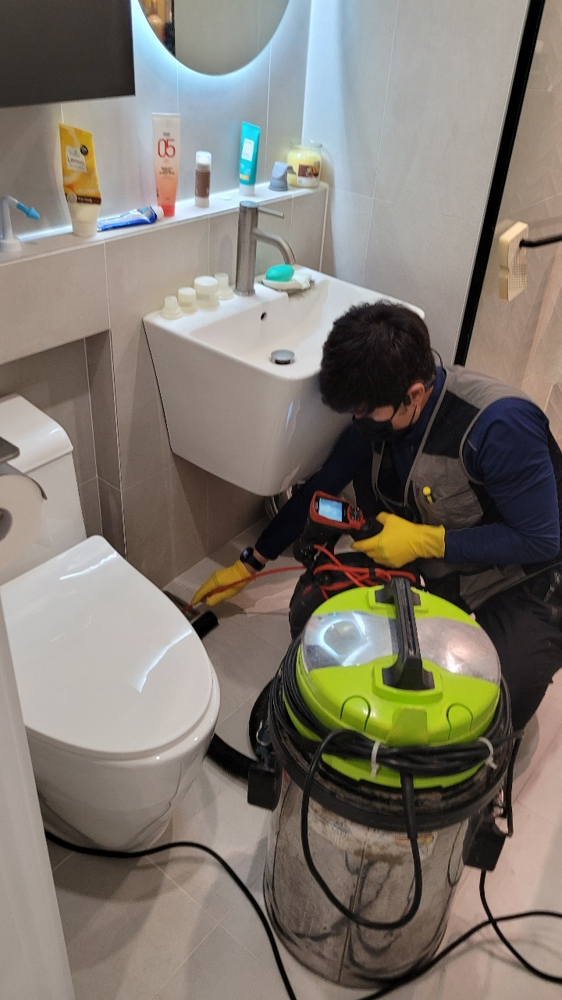
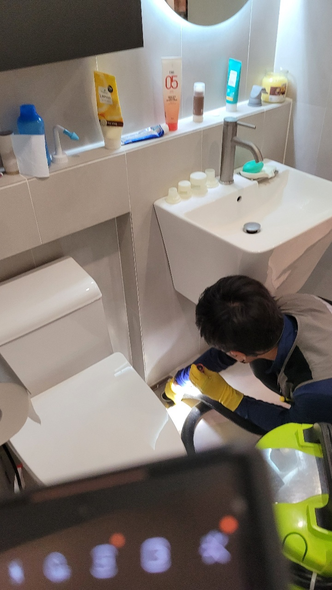
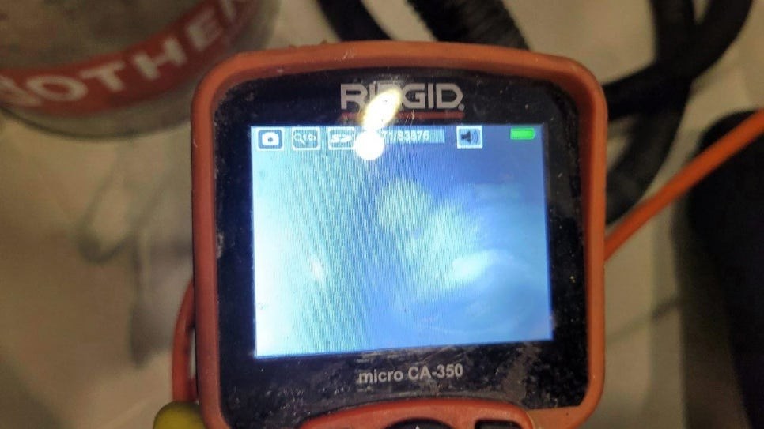
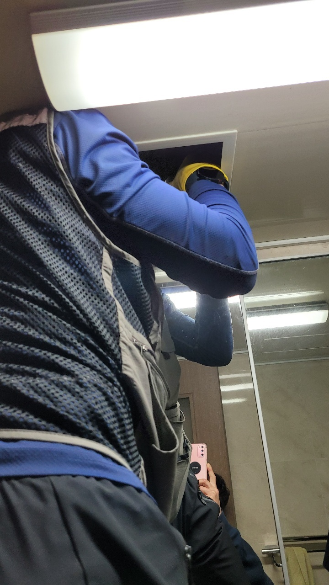

🏠 장안구 욕실하수구막힘 조원동 송죽동 완벽하게 뚫은 현장입니다!
수원 원동 싱크대막힘 전문 시공 후기

📋 작업 개요
- 위치: 수원 원동, 원동, 수원
- 서비스 유형: 싱크대막힘, 변기막힘, 하수구막힘, 배관막힘, 역류해결, 뚫는업체, 고압세척, 설비공사
- 작업 일시: 2022. 12. 1. 22:44
- 업체명: 하수구수사대 (010-5615-2118)
🔍 문제 상황
안녕하세요. 하수구수사대입니다.
일상 속에서 보통 하수구가 막혔을 때에는
확실하게 원인을 찾아서 해결을 하지 않게 되면 얼마 지나지 않아서 똑같은 문제가 발생하게 될 수 있습니다. 하수구막힘이 발생하게 되면 일반 가정집에서는 급한 마음에 셀프로 해결을 하고자 다양한 방법을 시도하고자 합니다.
이러한 방법에도 불구하고 하수구 배관으로 물이 원활하게 흐르지 않고 지속적인 문제가 발생을 한다면 배관 속에 이상이 생겼다고 예상을 할 수 있습니다. 배수관의 문제는 육안으로 보이지 않기 때문에 완전히 해결을 하기에는 어려움이 있을 수 있습니다.

🔎 원인 분석
💡 전문가 진단: 일상 속에서 보통 하수구가 막혔을 때에는
그러므로 전문장비를 이용해서 문제 해결을 할 수 있는 전문 업체로 문의를 하시는 것이 필요합니다.
이번에 저희가 방문한 현장은 장안구 욕실하수구막힘 조원동 송죽동 막힘 현장이었는데요. 어떻게 해결을 하게 되었는지 자세하게 알려드리도록 하겠습니다. 장안구 욕실하수구막힘 조원동 송죽동 현장은 비교적 한적한 곳에 위치하고 있는 곳이었습니다.
어느 날부터 갑자기 싱크대나 변기 등에서 물이 내려가는 속도가 점점 느려지기 시작을 하면서 어느 날부터는 완전히 막혀버렸다고 하는데요. 하수구가 설치된 공간을 이용하기 어렵게 되다 보니 긴급하게 연락을 주신 상황이었습니다.
경기도 수원시 장안구 서부로 2139 5층 5032호
실내에서 사용을 했던 물이 배수가 되지 못하고 계속해서 고이는 상황이 되다 보니

🔧 작업 과정
역류로 인한 악취도 함께 발생을 하던 곳이었는데요.
장안구 욕실하수구막힘 조원동 송죽동 가장 먼저 확인을 하는 작업은 바로 배관에 내시경 검사를 진행하기 위해서 배관의 내부를 확인하는 작업을 하였습니다. 이번 현장처럼 일반 가정집인 경우에는 배관의 위치를 확인하는 것이 크게 어렵지 않기 때문에 좀 더 쉬울 수 있는데요. 간혹 외부에 있는 큰 현장 같은 경우에는 관로 탐지기가 동원되기도 하는 것입니다.
욕실 바닥의 커버를 분리하고 내부 쪽으로 내시경 호스를 연결해서 배관의 내부를 확인해 보았는데요. 내시경 카메라로 배관 내부를 보니 각종 이물질들과 물티슈 그리고 머리카락 등이 엉켜있는 모습을 볼 수 있었습니다.
욕실의 경우에는 버릴 수 있는 것들만 버린다고 하더라도
이렇게 여러 가지의 이물질들이 쌓이게 되는 경우가 많이 있습니다.
특히나 공사 후에 석회질 같은 물질들이 내부로 들어가면서 막힘의 원인이 되는 경우도 있습니다. 식당 같은 경우에는 기름 찌꺼기가 배관 속으로 흘러들어가서 굳어버릴 수 있기 때문에 배관이 더욱 쉽게 막힐 수 있습니다. 식당처럼 이물질이 더욱 쉽게 배관 속으로 유입될 수 있는 경우에는 평소에 더욱 자주 관심을 가지고 관리를 해 주시는 것이 필요합니다.
특히 기름을 많이 사용하는 곳에서는 더욱 관리하는 주기를 가져주는 것이 중요합니다. 전문 업체를 통해서 고압세척을 정기적으로 하게 되면 배관에 이물질이 쌓여서 방치될 일이 없이 쾌적하게 관리를 할 수 있습니다.
내시경을 통해서 전체적인 점검이 끝난 후에는


✅ 작업 완료
다시 고압세척을 진행하기 위해서 고압세척 호스를 배관 내부로 넣어서 작업을 시작하였습니다. 강한 수압으로 배관 내부의 이물질들을 모두 세척을 하는 것이기 때문에 이물질들을 제거할 수 있을 뿐만 아니라 내부의 악취 제거도 모두 할 수 있는 것입니다.
고압세척을 진행하면서 내시경을 이용해서 배관 내부를 확인하는 작업도 동시에 하였는데요. 내부를 확인하면서 작업을 하게 되니 원인 해결을 확실하게 할 수 있게 되는 것입니다. 이번 현장처럼 일반 가정집의 경우도 혼자서 해결을 하시기보다는 전문장비를 통해서 원인 해결을 하고 해결을 하는 것이 도움이 되실 수 있습니다.




⚠️ 주방 싱크대 배관 막힘 예방 수칙
- ✅ 기름기가 묻은 식기나 프라이팬은 설거지 전 키친타올로 반드시 기름때를 닦아내세요.
- ✅ 주기적으로 싱크대 개수대에 뜨거운 물을 가득 받아 한 번에 내려 배관 내부 기름을 씻어내세요.
- ✅ 배수구 거름망을 미세한 필터로 사용하시고 음식물 찌꺼기가 틈으로 새어 들지 않게 관리하세요.
- ✅ 베이킹소다와 식초를 뜨거운 물과 함께 일주일에 한 번씩 부어주면 배관 살균과 막힘 예방에 좋습니다.
💡 핵심 정리
- 확실한 장비 작업(내시경 점검 및 샤프트 스케일링)으로 원인을 뿌리 뽑습니다.
- 작업 후 1년 이내에 동일한 부위 재발 시 100% 무상 A/S 서비스를 보장합니다.
- 서울 · 경기 · 인천 전 지역에 24시간 언제든 긴급 출동할 수 있도록 항시 대기 중입니다.
❓ 자주 묻는 질문 (FAQ)
🚨 수원 원동 싱크대막힘 문제로 고민이신가요?
정확한 원인 진단과 확실한 시공으로 재발 없는 해결을 약속드립니다.
24시간 긴급 출동 | 서울 · 경기 · 인천 전지역 | 1년 내 재발 시 무상 A/S